Laboratorio de automatización industrial — Cap. 1: Mi primer PLC casero (ESP32 + OpenPLC)
Hace unos años, cuando trabajaba como técnico electricista, surgió la necesidad profesional de mejorar mis conocimientos sobre redes y comunicaciones. Lo que empezó como una forma de resolver problemas relacionados con mi trabajo terminó despertando una curiosidad que no tardó en ir mucho más allá. Poco a poco fui adentrándome en el mundo de la informática, hasta descubrir una de sus facetas que más me fascinó desde el principio: el hacking.
Aquella primera toma de contacto me abrió las puertas a un mundo que apenas conocía. Detrás de cada sistema había redes, protocolos, sistemas operativos, lenguajes de programación y un sinfín de mecanismos por descubrir. Lo que comenzó como una necesidad profesional se convirtió en un interés genuino por entender cómo funciona la tecnología, desde las comunicaciones entre máquinas hasta el software que hace posible su funcionamiento. Y, casi sin darme cuenta, acabé encontrando en la informática un nuevo camino profesional.
Actualmente estoy ampliando mis conocimientos en sistemas embebidos, y me parece una buena oportunidad para recuperar esa conexión entre el mundo eléctrico y el informático. En particular, quiero explorar la automatización industrial desde una perspectiva práctica: construir pequeños laboratorios, experimentar con protocolos de comunicación y entender qué ocurre cuando el software deja de trabajar únicamente con datos y empieza a interactuar con procesos físicos.
De ahí nace este proyecto personal. La idea es montar un pequeño laboratorio de automatización en el que pueda experimentar con PLCs, dispositivos embebidos y protocolos industriales como Modbus y PROFINET. No pretendo reproducir una instalación industrial real, sino construir una base práctica que me permita comprender mejor sus componentes, su funcionamiento y la forma en que se comunican entre sí.
Para empezar, he decidido utilizar una placa ESP32 junto con OpenPLC. El objetivo inicial es sencillo: ejecutar un programa de control básico, trabajar con entradas y salidas digitales y comprobar cómo responde el sistema ante diferentes señales. Será una primera aproximación a la lógica de los PLCs y a la relación entre el programa y el hardware.
En esta primera entrada explicaré cómo configuré OpenPLC Editor, preparé un programa sencillo en lenguaje Ladder y lo cargué en el ESP32. En las siguientes entregas iré ampliando el laboratorio, empezando por el montaje físico y avanzando hacia nuevas pruebas de comunicación y automatización.
Entendiendo OpenPLC
Basta con decir, por ahora, que OpenPLC es un proyecto de software libre que permite desarrollar y ejecutar programas de control industrial. Entre otras posibilidades, trabaja con los lenguajes de programación contemplados en la norma IEC 61131-3 y permite experimentar con lógica de PLC utilizando diferentes plataformas de hardware compatibles.
En este caso voy a utilizar un ESP32 como plataforma de experimentación. La idea es ejecutar un programa de control que lea unas entradas digitales, evalúe su lógica y actualice una salida. Aunque una placa de desarrollo no sustituye a un PLC industrial en términos de robustez, seguridad o certificación, sí permite explorar algunos de sus principios de funcionamiento de una forma económica y accesible.
Desde su página web podéis descargar el software: OpenPLC
Manos a la obra
Una vez presentado el software, vamos manos a la obra. Lo primero que hice fue configurar la placa de desarrollo dentro de OpenPLC.
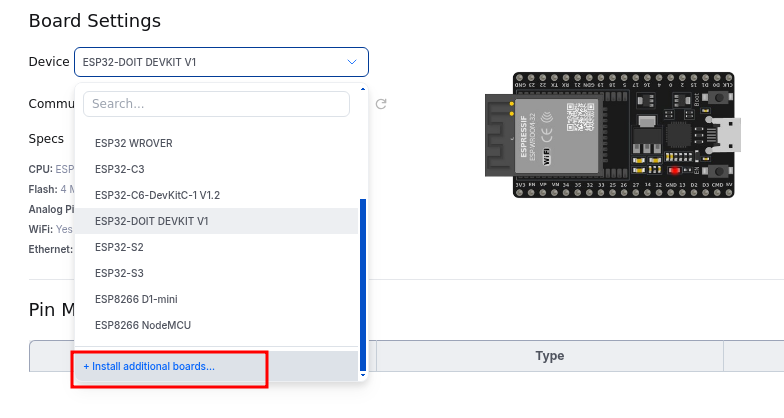
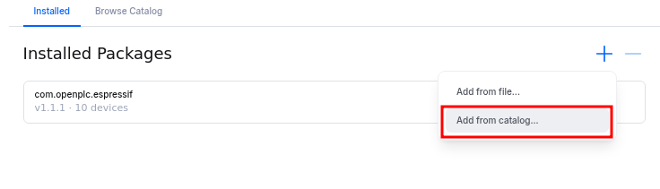
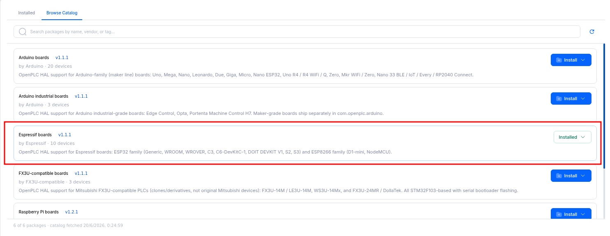
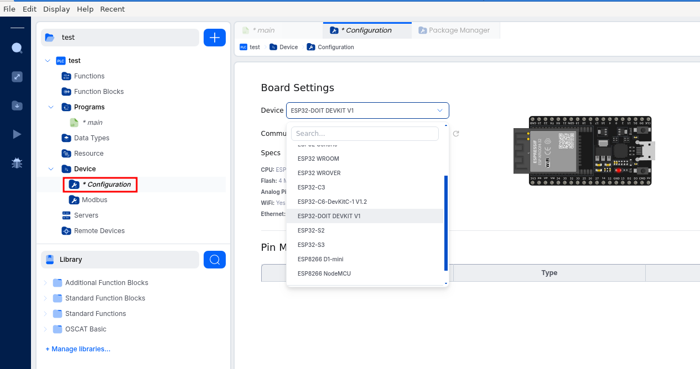
Una vez encontrado el modelo de placa, conecté el ESP32 al PC. En mi caso, al trabajar con Debian y utilizar un conversor USB a UART basado en el CP2102, no necesité instalar drivers adicionales, ya que el sistema dispone de soporte para este dispositivo.
En algunos ESP32 el conversor USB a UART es un chip CH340. Si el sistema no lo reconoce automáticamente, puede ser necesario instalar o configurar el controlador correspondiente.Se pueden encontrar indicaciones en el siguiente enlace: SunFounder
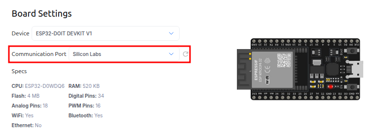
Para empezar quería mantener el programa lo más sencillo posible, así que opté por implementar una lógica de marcha y paro con dos pulsadores y un LED como salida. Es un ejemplo básico, pero permite entender varios conceptos importantes de la programación de PLCs: lectura de entradas, evaluación de condiciones, control de salidas y enclavamiento.
A continuación establecí los pines que iba a utilizar:
- Pin 32: botón de marcha | Digital Input | %IX0.0
- Pin 33: botón de paro | Digital Input | %IX0.1
- Pin 25: salida al LED | Digital Output | %QX0.0
Este mapeo de entradas y salidas lo trasladé a OpenPLC de la siguiente manera:
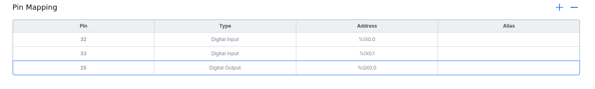
Una vez configuradas las entradas y salidas, comencé a escribir el programa en Ladder. Para ello creé un nuevo rung.
Añadí los contactos desde el panel lateral de OpenPLC Editor:
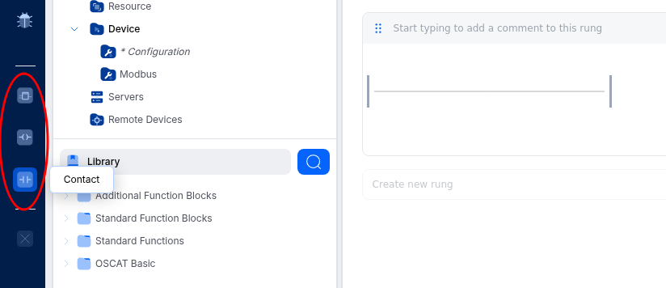
El programa era muy sencillo: utilizaba los contactos asociados a los botones de marcha y paro para controlar una bobina que representaba el LED. Además, añadí un contacto auxiliar asociado a la propia salida, conectado en paralelo con el de marcha. Este enclavamiento permite mantener la salida activada después de soltar el pulsador de marcha, hasta que se acciona el de paro.
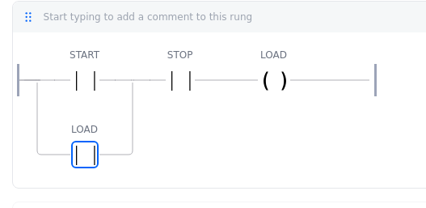
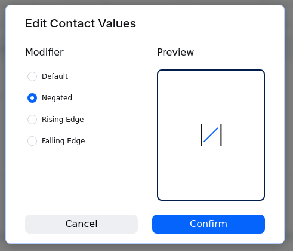
Una vez creado el programa, establecí las variables:
- START | INPUT | BOOL | %IX0.0 | 0
- STOP | INPUT | BOOL | %IX0.1 | 0
- LOAD | OUTPUT | BOOL | %QX0.0 | 0
Y las configuré en OpenPLC de la siguiente manera:
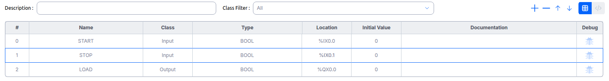
Con el programa terminado, llegó el momento de compilarlo y cargarlo en el ESP32.
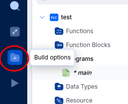
Pero apareció un error. Demasiado fácil estaba siendo.
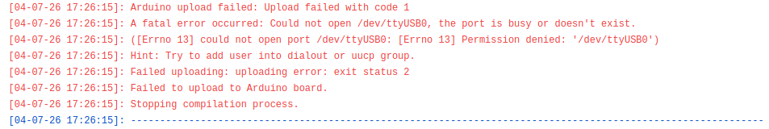
En Debian, los permisos de acceso a los puertos serie suelen gestionarse mediante grupos del sistema. En mi caso, añadí mi usuario al grupo dialout con el siguiente comando:
sudo usermod -a -G dialout enroot
Sustituye enroot por tu nombre de usuario si es diferente.
Después de modificar los grupos, puede ser necesario cerrar la sesión y
volver a iniciarla para que el cambio tenga efecto.
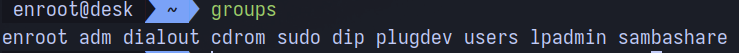
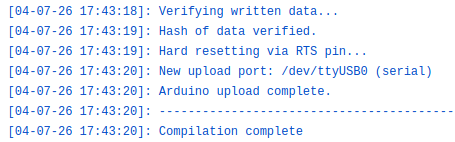
¿Qué hemos conseguido?
Con este primer ejercicio ya tenemos una base sobre la que seguir trabajando: una placa ESP32 ejecutando una lógica de control desarrollada en Ladder, con dos entradas digitales y una salida. Es un montaje sencillo, pero permite empezar a relacionar la programación de PLCs con el hardware y comprender cómo se implementa una lógica básica de marcha y paro.
En la siguiente entrega mostraré cómo diseñé el circuito y cableé el ESP32 en una protoboard. Más adelante, la idea es ampliar el laboratorio para experimentar con la comunicación industrial y estudiar protocolos como Modbus, además de explorar otras tecnologías habituales en entornos de automatización.
Este es un proyecto personal que iré construyendo poco a poco, documentando tanto los resultados como los errores que me encuentre por el camino. Espero que disfrutéis leyendo estas pruebas tanto como yo disfruto haciéndolas. ¡Nos vemos en la próxima!
EnRoot